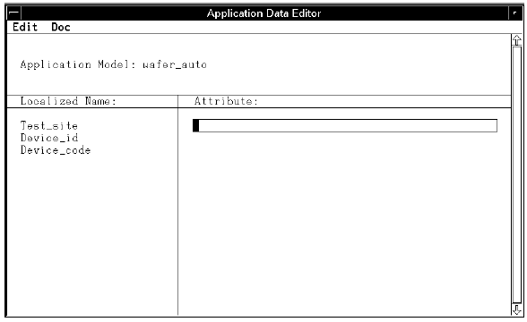

APPLIC_DATA_EDITOR_INPUT
When the application model is parsed, any APPLIC_DATA_EDITOR_INPUT entries will appear in the Application Data Editor window. It is one of the <access> parameters. It can be used to define certain data during creation of the test program.
The APPLIC_DATA_EDITOR_INPUT specifies what text appears within the Localized Name column of the Application Data Editor window.
If the lines,
*Test_site=APPLIC_DATA_EDITOR_INPUT/REGEXP(string);
*Device_id=APPLIC_DATA_EDITOR_INPUT/REGEXP(string);
*Device_code=APPLIC_DATA_EDITOR_INPUT/REGEXP(string);
are included in your application model, the Application Data Editor window will be similar to that shown in the figure below.
